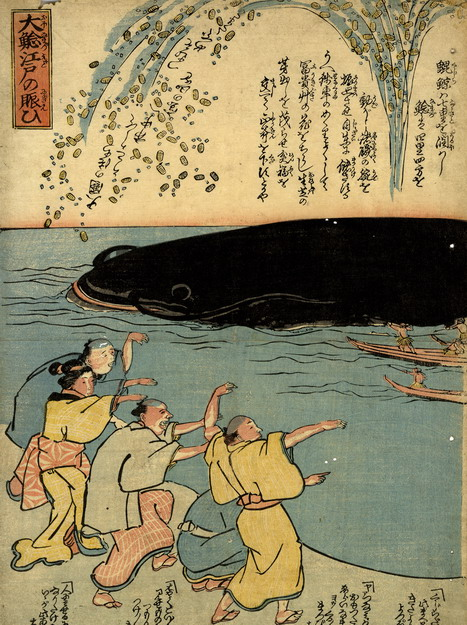

鯨のように巨大な鯰が、湾に浮いている。背中から潮と小判を吹き出している。漁師が舟で鯰に向かい、岸ではそれを見た人々が喜んでいる。
出典：親書誌：U426_nichibunken_0164：大鯰江戸の賑ひ；オオナマズエドノニギワイ／日付：2010／資源識別子：U426_nichibunken_0164_0001_0000
Copyright (c)2010- International Research Center for Japanese Studies, Kyoto, Japan. All rights reserved.